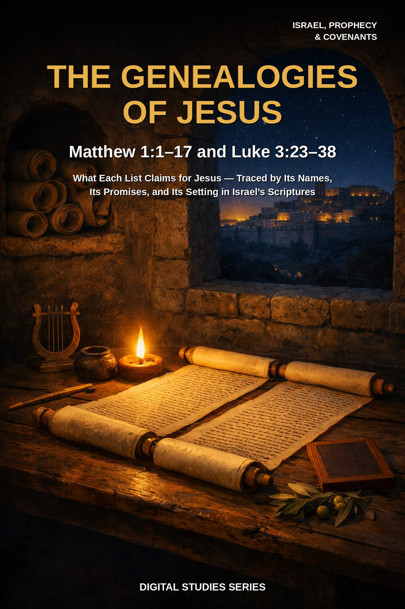
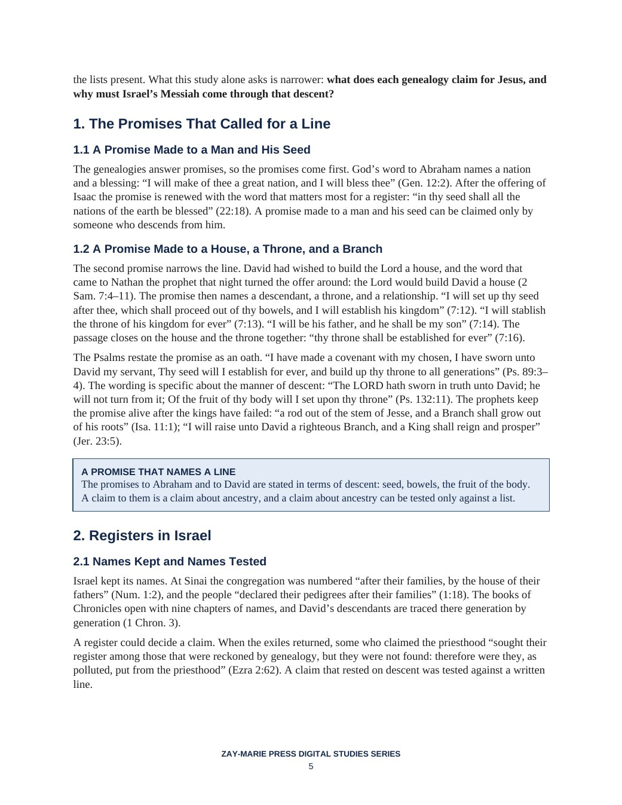

The Genealogies of Jesus
Matthew 1:1–17 and Luke 3:23–38
What does each genealogy claim for Jesus, and why must Israel’s Messiah come through that descent?
Matthew opens his Gospel with a list of names, and Luke sets another at the start of the ministry. Most readers pass over both, yet the two lists are not alike, and each is placed where it is for a reason the text itself lets us examine.
This study reads the lists as records: the promises they answer, the registers Israel kept, the shape and wording of each list, and the place where they meet and part. It holds to one order throughout: meaning first, assignment second, application third.
Read the Lists as the Records They Are
You will trace the promises to Abraham and to David and the words in which they name a line, see how Israel kept and tested its registers, and read Matthew’s list and Luke’s list each on its own terms. You will set them side by side, follow Jeremiah 22:24–30 through its context, read the women named in Matthew’s list from their own accounts, and test four common readings against the text before drawing the assignment and application.
Readers who already own Study 63 (Isaiah 7:13–16), Study 17 (The Abrahamic Covenant), or Study 12 (The New Covenant) will recognize adjoining ground. Study 63 reads Isaiah’s sign to Ahaz’s house and how Matthew uses it; this study reads Matthew’s and Luke’s lists and does not take up that sign. Study 17 follows the covenant with Abraham across Scripture; this study takes only the words of descent in the promises, as they bear on a register. Study 12 reads the New Covenant; this study shares a prophet with it but reads only Jeremiah 22:24–30 and does not enter the covenant of Jeremiah 31. The question this study alone answers: what does each genealogy of Jesus claim for him, and why must Israel’s Messiah come through that descent?
How These Studies Relate
Study 71 reads two genealogies. The studies below supply the neighboring ground it deliberately does not repeat.
Study 63 — Isaiah 7:13–16 Read Isaiah’s sign to the house of David and how Matthew uses it; Study 71 reads the lists and does not take up that sign.
Study 17 — The Abrahamic Covenant Follow God’s promises to Abraham across Scripture; Study 71 takes only the words of descent, as they bear on a register.
Study 12 — The New Covenant Read the New Covenant as a covenant; Study 71 reads one sentence in Jeremiah 22 and does not enter that covenant.
Trace the Lists Before You Conclude
The Promises That Name a Line
Trace the promises to Abraham and to David (Genesis 22:15–18; 2 Samuel 7:12–16; Psalm 132:11) and note the exact words in which each promise names a seed, a house, and a throne.
Matthew’s List as Arranged
Read Matthew 1:1–17 as Matthew arranged it: the heading of verse 1, the three groups of fourteen, the kings left out (compare 1 Chronicles 3:10–16), and the change of wording at verse 16.
Luke’s List in Its Setting
Read Luke 3:23–38 where Luke placed it, noting what “as was supposed” governs, which son of David he names, and where his list ends.
Where the Lists Meet and Part
Set the two lists side by side and trace where they share names and where they part, including Salathiel and Zorobabel (Matthew 1:12; Luke 3:27), before deciding how they belong together.
A Prophetic Sentence in Context
Follow Jeremiah 22:24–30 through its own context (2 Kings 24; 1 Chronicles 3:17–19; Haggai 2:23; Jeremiah 23:5–6) and learn to ask what a sentence says, and of whom, before applying it to a later person.
The Women Named in the List
Trace the women of Matthew 1:3, 5, 6, 16 through their own accounts in Genesis, Joshua, Ruth, and 2 Samuel, and learn to report what a text states without supplying a reason it does not give.
Read the Word in Its Context
Genesis 22:15–18
The promise renewed to Abraham after the offering of Isaac.
2 Samuel 7:4–17
The promise to David of a house, a throne, and a seed.
Psalm 132:11–12
The oath sworn to David about the fruit of his body.
Ezra 2:59–63
Those who sought their register and could not find it.
Matthew 1:1–17
The book of the generation of Jesus Christ, in three groups of fourteen.
Luke 3:21–38
The list set at the start of the ministry, running back to Adam.
Jeremiah 22:24–30
The sentence on Coniah and the throne of David.
Ruth 4:13–22
The line from Perez through Boaz and Obed to David.
A Claim That Needs a List
A promise made to a man and his seed can be claimed only by someone who descends from him.
The genealogies answer promises, so the promises come first.
Preview the Study Before You Purchase
Click any page to enlarge it for reading.



The Promises That Called for a Line
See how the study begins with the words of the promises before it reads either list.
A Focused Study of Two Genealogies
16-Page Digital PDF
Approved cover and 15-page numbered interior.
9 Teaching Sections
A text-driven study from the promises to careful application.
Callout Boxes
Six callout boxes marking the study’s key working rules.
Comparison Tables
Four tables: the two lists side by side, the women in Matthew’s list, four common readings, and the distinctions to retain.
Scripture-Tracing Exercise
Six guided traces through the passages the study relies on.
Guided Further Study
Three passage groups for deeper reading.
Review Questions
Five questions testing the study’s markers and method.
Final Synthesis Exercise
A written synthesis drawing the whole study together.
The Genealogies of Jesus
16-page digital PDF · For personal use